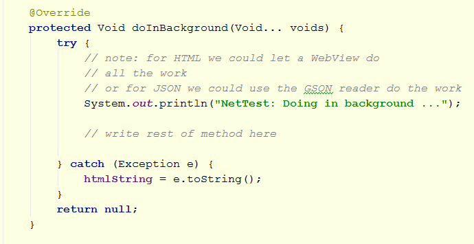
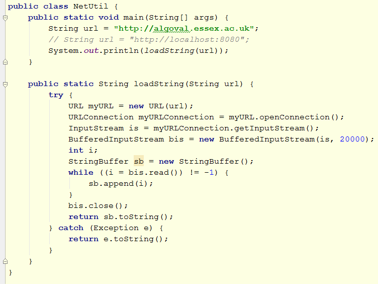
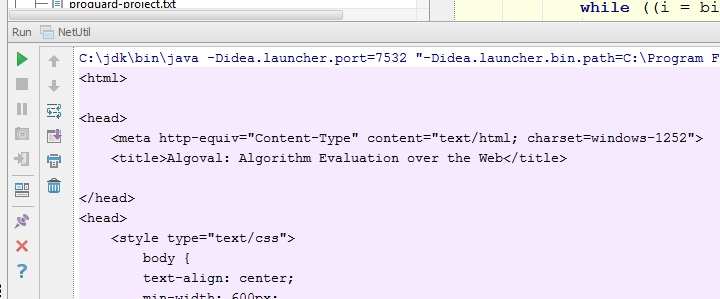

The aim of this lab is to work through a number of ways to connect your app with other apps and with web applications. The lab follows on from the Networking lecture notes.
The aim of the app we'll develop is to illustrate the following concepts:
To get started spend some time re-reading the sample code we studied in the lecture:
Now download and run a broken version of an app you'll complete as part of this lab.
The .zip file is NetworkSimpleTestBroken.zip
In a previous lab we looked at using Intents to launch a WebView that could view web pages. Here we look at another alternative: Intent.ACTION_SEND.
Run the broken version of the app, and test the Share menun item. This should work, though if running on an emulator you might be limited to simulating sending a message:
On a real device you will typically see a range of sharing options.
The code is in the sharingTest method:

If an application has a filter that matches ACTION_SEND and MIME type text/plain, the Android system will run it; if more than one application matches, the system displays a disambiguation dialog (a "chooser") that allows the user to choose an app. If you call Intent.createChooser() for the intent, Android will always display the chooser.
For more detail see here.
The code for downloading a String from a URL using an HTTP request is missing from the doInBackground method:

Write the code (where it says "// write rest of method here") to make the method function correctly. It should download a String from a web site. As an additional exercise try to print how long the download took and the size of the downlaod to the logcat.
Using a standard URL should work either in the emulator or on a device.
When writing the code for this you should use the NetUtil.loadString() method to load the HTML string from the server:

The version of loadString() supplied is broken. Before testing the Android app you should fix the bug (as discussed in the lecture) and make it work from the main method. If it works you should see an HTML string printed to the standard output.

When you get it working test the "Load" menu item. Within the emulator it could look like this (the example uses http://algoval.essex.ac.uk as the URL).

The example of loading an HTML string to insert into a WebView is a bit artificial - so far we've not seen any advantage over letting the WebView do all the work.
However, by programming the details of making HTTP Connections to URLs we can now experiment with a simple REST-based API. REST offers a wonderfully simply way for a networked application to interact with a server. REST uses HTTP to send requests to the server and interpret the responses. In the simplest case we can use HTTP GET. This works well when all the information to be sent to the server can easily be encoded in short strings. When this is not the case, HTTP POST can be used.
We can take the score example studied in the SQL lab and now adapt this to a REST-based API. There are two aspects to implementing this: the server side and the client side. First we'll look at the client side.
One of the advantages of using GET is that we can test the interactions with the web server in a web browser, simply by clicking the links. Recall the ScoreDB interface class:

We can check these by clicking the links below:
Play with the URL strings in your browser address bar and observe the effects of:
Now write client side code to read in the return values of topN and display the top 5 scores in a web view either as plain text or as an HTML table (plain text is simpler and fine for the purpose of the exercise). Add a menu item called topN to invoke the code and display it.
In order to help you with this you can use this utility class to get you started. It demonstrates how to read in the list of scores from a JSON string.
An easy way to read and write JSON is to use Google's gson library. Download this and add it to your lib directory. You'll also need to add it to the list of dependencies in your IDE.

Note that I have introduced another class called ScoreList to simplify the process of decoding an array list of scores from JSON:

Now add another menu item to add scores using the REST approach.
Note: for each of these you will need to build URL strings that encode the necessary query parameters: refer to the above links for examples of how these should look.
Server Side
The server part is a bit outside the scope of this lab. Any implementation able to decode the GET requests and return the necessary JSON objects would be fine.
My implementation running is done using JSP plus a few helper classes. The JSP page is shown below:

The complete project for it is here.
The code for this could easily become a bit messy: maybe you already did this, but try writing a new implementation of ScoreDB called JsonDB that wraps up all these methods and makes the code very easy to use.
end of page